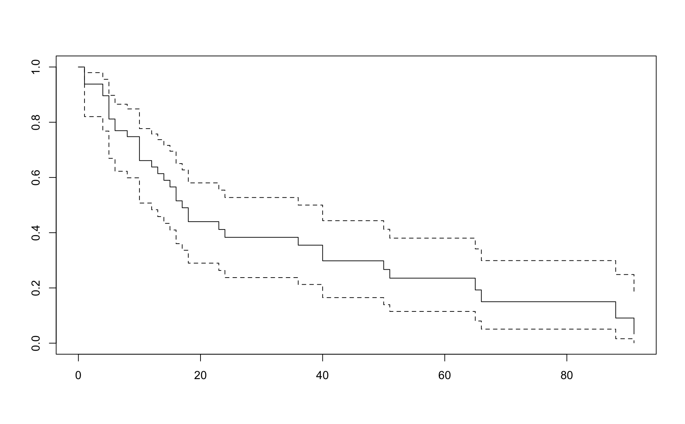
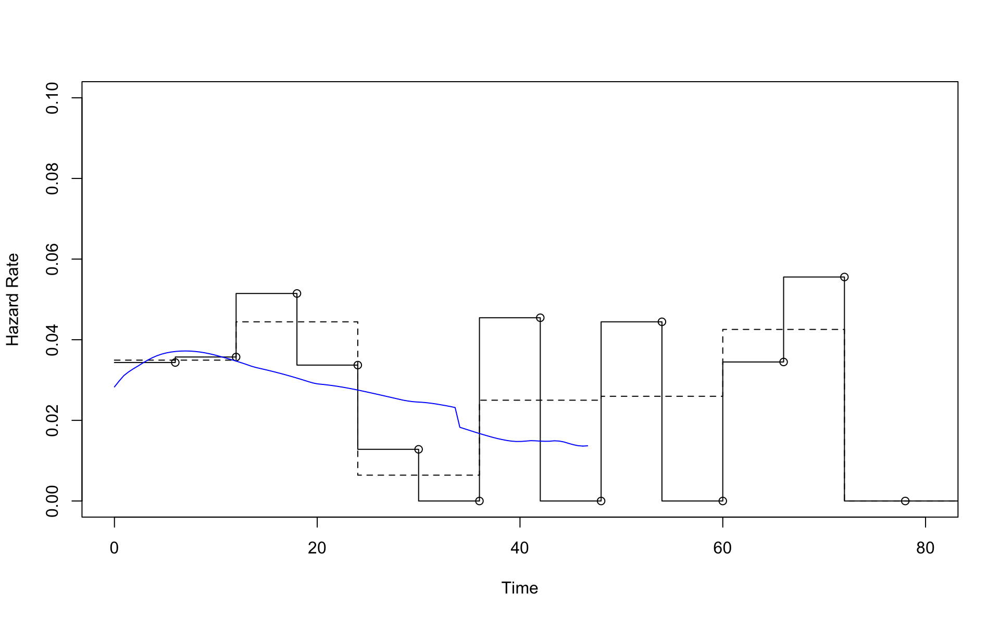

Chapter 2 Some Non-Parametric Procedures
Look at the methods at the following pate to estimate S(t) using the actuarial method and the Kaplan Meier method:
http://sphweb.bumc.bu.edu/otlt/MPH-Modules/BS/BS704_Survival/BS704_Survival_print.html
2.1 2.1.2
The Kaplan Meier estimator of a survival curve is a step function, continuous from the right. At \(t_0=0\) we have \(S(t_0)=1\). Let the first survival time be \(t_1\) and assume \(d_1\) events where \(n_1\) were at risk. This means that \(d_1\) individuals had survival time equal to \(t_1\).
Then the event probability is estimated as \(\hat{q}_1 = d_1/n_1\) and the survival probability as \(\hat{p}_1=1-\hat{q}_1 = 1-d_1/n_1\). Then \[ \hat{S}(t_1)=(1-\hat{q}_1)=\left(1-\frac{d_1}{n_1}\right). \] Assume \(d_2\) events at time \(t_2>t_1\) where \(n_2\) are at risk.Since \(S(t_2)=P[T > t_2] = P[T > t_2|T>t_1] P[T>t_1]\), it is natural to continue with \(\hat{S}(t_2)= (1-\hat{q}_2)\hat{S}(t_1)\). In other words:
\[ \hat{S}(t_2)=(1-\hat{q}_2)(1-\hat{q}_1)=\left(1-\frac{d_2}{n_2}\right)\left(1-\frac{d_1}{n_1}\right). \]
Then similarly for \(t_3\), \(t_4\) etc so that for any \(t\) \[ \hat{S}(t) = \prod_{t_i \le t} (1-\hat{q_î}) = \prod_{t_i \le t} \left(1-\frac{d_i}{n_i}\right). \]
Recall that \(P[A | B] = P[A \cap B]/P(B)\) and note that \(P[T > t_2]=P[T > t_2 \cap T > t_1]\), for \(t_2>t_1\).
There is only a change in \(\hat{S}(t)\) when \(t\) is a time of an event. It does not change when \(t\) is a censored time. However, the number at risk changes.
2.2 2.1.3 Nelson - Aalen
In an interval from \(t_{i-1}\) to \(t_i\) it is natural to estimate the hazard with the number of events in that interval divided by the person years in that interval.
\[ h(t_i) = \frac{d_i}{n_i (t_i-t_{i-1})}. \]
The cumulative hazard can then be estimated by numerical integration: \[ H(t) = \sum_{t_i \le t} \frac{d_i}{n_i (t_i-t_{i-1})} (t_i-t_{i-1}) \] so that
\[ H(t) = \sum_{t_i \le t} \frac{d_i}{n_i}. \]
From \(\exp(a+b) = \exp(a)\exp(b)\) we get the Nelson-Aalen estimator of \(S(t)\) as
\[ S(t) = \exp(-H(t)) = \prod_{j=1}^{k} \exp(-d_i/n_i) \] where \(t_k\) is the largest time less than \(t\).
2.3 2.2
We can use the status method to estimate the sampling error in \(\hat{S}(t)\). The status method is used to estimate the variance of a function of a random variable. Let \(f\) be differentiable. It says that if \(E(X)=\mu\) then
\[ \mathrm{Var}(f(X)) \approx \mathrm{Var(X)}\left(f^\prime(\mu)\right)^2 \]
In particular \[ \mathrm{Var}(\log(X)) \approx \mathrm{Var(X)}(1/\mu)^2 \] and \[ \mathrm{Var}(\exp(X)) \approx \mathrm{Var(X)}(\exp(\mu))^2. \]
For example,
\[ \mathrm{var}(\log(1-\hat{q}))=\mathrm{var}(\log(\hat{p}))) \approx \mathrm{var}(\hat{p})\left(1/{p}\right)^2=\frac{\hat{p}(1-\hat{p})}{n{p}^2}, \] which we estimate by \[ \frac{\hat{p}(1-\hat{p})}{n\hat{p}^2} \]
Simplifying further leads to: \[ \mathrm{var}(\log(1-\hat{q})) \approx \frac{1-\hat{p}}{n \hat{p}} = \frac{\hat{q}}{n(1-\hat{q})} = \frac{d/n}{n(1-d/n)}=\frac{d}{n(n-d)}. \]
Therefore \[ \mathrm{Var}(\log(\hat{S}(t))) = \sum_{t_i\le t} \frac{d_i}{n_i(n_i-d_i)} \]
Then we can write \(\hat{S}(t)=\exp(\log(\hat{S}(t)))\) and use the status-method on the random variable \(\log(\hat{S}(t))\) with the function \(f(u)=\exp(u)\).
\[ \mathrm{Var}(\hat{S}(t)) = \mathrm{Var}(\exp(\log(\hat{S}(t)))) = \mathrm{Var}(\log(\hat{S}(t))) \left(\hat{S}(t)) \right)^2. \]
In other words, using the results above, \[ \mathrm{Var}(\hat{S}(t)) = \left(\hat{S}(t)) \right)^2 \sum_{t_i\le t} \frac{d_i}{n_i(n_i-d_i)}. \]
Further details can be found in the Appendix of the survival book by Hosmer, Lemeshow, and May.
2.4 2.2 Estimating the hazard function
We learn a lot about the data by studying the hazard functions.
But first, let’s look at the survival. We use the data from example 1.3.
Survival_of_multiple_myeloma_patients <- read.table("Data/Survival of multiple myeloma patients.dat", header = T)
d <- Survival_of_multiple_myeloma_patients %>% as_tibbleresult.km <- survfit(Surv(time, status) ~ 1,conf.type="log-log",data=d)
result.na <- survfit(Surv(time, status) ~ 1,conf.type="log-log",type="fh",data=d)Kaplan Meier

## Call: survfit(formula = Surv(time, status) ~ 1, data = d, conf.type = "log-log")
##
## n events median 0.95LCL 0.95UCL
## 48 36 17 12 36## Call: survfit(formula = Surv(time, status) ~ 1, data = d, conf.type = "log-log")
##
## time n.risk n.event survival std.err lower 95% CI upper 95% CI
## 1 48 3 0.9375 0.0349 0.81861 0.979
## 4 44 2 0.8949 0.0445 0.76565 0.955
## 5 42 4 0.8097 0.0571 0.66602 0.896
## 6 38 2 0.7670 0.0616 0.61885 0.864
## 8 35 1 0.7451 0.0636 0.59488 0.847
## 10 34 4 0.6575 0.0696 0.50272 0.774
## 12 28 1 0.6340 0.0710 0.47833 0.755
## 13 26 1 0.6096 0.0723 0.45312 0.734
## 14 25 1 0.5852 0.0734 0.42841 0.713
## 15 24 1 0.5608 0.0743 0.40416 0.691
## 16 22 2 0.5098 0.0758 0.35415 0.646
## 17 20 1 0.4844 0.0762 0.32991 0.623
## 18 19 2 0.4334 0.0762 0.28292 0.575
## 23 15 1 0.4045 0.0764 0.25602 0.548
## 24 14 1 0.3756 0.0762 0.22997 0.521
## 36 13 1 0.3467 0.0756 0.20475 0.493
## 40 12 2 0.2889 0.0732 0.15685 0.435
## 50 9 1 0.2568 0.0718 0.13080 0.403
## 51 8 1 0.2247 0.0696 0.10622 0.370
## 65 5 1 0.1798 0.0687 0.07030 0.330
## 66 4 1 0.1348 0.0646 0.04073 0.285
## 88 2 1 0.0674 0.0576 0.00663 0.235
## 91 1 1 0.0000 NaN NA NANelson-Aalen
## Call: survfit(formula = Surv(time, status) ~ 1, data = d, conf.type = "log-log",
## type = "fh")
##
## n events median 0.95LCL 0.95UCL
## 48 36 17 12 40## Call: survfit(formula = Surv(time, status) ~ 1, data = d, conf.type = "log-log",
## type = "fh")
##
## time n.risk n.event survival std.err lower 95% CI upper 95% CI
## 1 48 3 0.9381 0.0346 0.82037 0.980
## 4 44 2 0.8960 0.0440 0.76792 0.955
## 5 42 4 0.8117 0.0566 0.66921 0.897
## 6 38 2 0.7695 0.0610 0.62246 0.865
## 8 35 1 0.7478 0.0630 0.59871 0.848
## 10 34 4 0.6611 0.0690 0.50737 0.777
## 12 28 1 0.6379 0.0704 0.48322 0.757
## 13 26 1 0.6139 0.0717 0.45828 0.737
## 14 25 1 0.5898 0.0728 0.43382 0.716
## 15 24 1 0.5657 0.0737 0.40982 0.695
## 16 22 2 0.5154 0.0753 0.36034 0.650
## 17 20 1 0.4903 0.0757 0.33635 0.627
## 18 19 2 0.4400 0.0758 0.28978 0.580
## 23 15 1 0.4117 0.0760 0.26325 0.554
## 24 14 1 0.3833 0.0759 0.23751 0.527
## 36 13 1 0.3549 0.0754 0.21256 0.500
## 40 12 2 0.2981 0.0732 0.16504 0.444
## 50 9 1 0.2668 0.0719 0.13931 0.412
## 51 8 1 0.2354 0.0700 0.11492 0.380
## 65 5 1 0.1928 0.0691 0.08031 0.341
## 66 4 1 0.1501 0.0656 0.05087 0.299
## 88 2 1 0.0911 0.0605 0.01617 0.249
## 91 1 1 0.0335 0.0402 0.00113 0.183In R we have the muhaz and pehaz functions to estimate the hazard.
##
## max.time= 91
## width= 12
## nbins= 8The output from pehaz:
##
## Call:
## pehaz(times = time, delta = status, width = 12)
##
## Bin Width:
## [1] 12
##
## Cuts Defining the Bins:
## [1] 0 12 24 36 48 60 72 84 96
##
## Hazard Estimate for Each Bin:
## [1] 0.034934498 0.044444444 0.006410256 0.025000000 0.025974026 0.042553191
## [7] 0.000000000 0.181818182
##
## Number of Events in Each Bin:
## [1] 16 10 1 3 2 2 0 2
##
## Number at Risk in Each Bin:
## [1] 48 28 14 13 9 5 3 2
##
## Total Follow-up Time in Each Bin:
## [1] 458 225 156 120 77 47 28 11The hazard in interval \(i\) is estimated with \(d_i / \mathrm{Follow-up}_i\) where \(\mathrm{Follow-up}\) is the Total Follow-up Time \(i\).
If we take 12 months as a fixed time interval, we get on one hand from \(d_i/n_i\)
## [1] 0.027777778 0.029761905 0.005952381 0.019230769 0.018518519 0.033333333
## [7] 0.000000000 0.083333333and on the other hand the correct result.
## [1] 0.034934498 0.044444444 0.006410256 0.025000000 0.025974026 0.042553191
## [7] 0.000000000 0.181818182## [1] 0.034934498 0.044444444 0.006410256 0.025000000 0.025974026 0.042553191
## [7] 0.000000000 0.181818182Note that using number at risk times 12 leads to overestimate in the person-years and therefore underestimate in the hazard.
This difference gets smaller with smaller intervals.
Graphical comparison
##
## max.time= 91
## width= 6
## nbins= 16detach(d)
plot(result.pe6,xlim=c(0,80),ylim=c(0,0.1))
lines(result.pe12)
points(result.pe6$Cuts[-1],result.pe6$Hazard)
lines(result.smooth$est.grid,result.smooth$haz.est,col="blue")
This is a comparison of the Nelson Aalen estimator (line) with the result from pehaz.
Note \(H(t)=-\log(S)\) is on the y-axis.

Comparison using the Kaplan-Meier results and transformations based pehaz (blue line).
plot(result.km,xlim=c(0,90))
lines(result.pe6$Cuts[-1],exp(-cumsum(result.pe6$Hazard)*6),col="blue")
Results from the rms package

2.5 An Application to Cat Adoptions
2.5.1 Data
We’ll work with the AustinCats data from the rethinking package, the companion package to the book Statistical Rethinking by Richard McElreath.
2.5.2 Kaplan-Meier
In the Kaplan-Meier estimate, the survivor function is estimated and then transformed to the hazard function.
km <- d %>%
mutate(n = n()) %>%
group_by(days_to_event, n) %>%
summarise(events = sum(out_event == "Adoption"),
censored = n() - events,
lost = events + censored) %>%
ungroup %>%
mutate(total_lost = cumsum(lost),
n = n - lag(total_lost, default = 0),
conditional_survival = (n - events) / n,
surv = cumprod(conditional_survival),
cumulative_hazard = -log(surv),
hazard = cumulative_hazard - lag(cumulative_hazard, default = 0)) %>%
rename(Hazard = hazard, "Cumulative Hazard" = cumulative_hazard, "Survival" = surv) %>%
pivot_longer(c(Hazard, "Cumulative Hazard", Survival)) %>%
mutate(type = "Kaplan-Meier")
km %>%
ggplot(aes(days_to_event, value)) +
geom_step() +
facet_wrap("name", scales = "free") +
labs(x = "Time (days)",
title = "Kaplan-Meier estimates for cat adoptions") +
theme(axis.title.y = element_blank())2.5.3 Nelson-Aalen
In the Nelson-Aalen estimate, the hazard function is estimated and then transformed to the survivor function.
na <- d %>%
mutate(n = n()) %>%
group_by(days_to_event, n) %>%
summarise(events = sum(out_event == "Adoption"),
censored = n() - events,
lost = events + censored) %>%
ungroup %>%
mutate(total_lost = cumsum(lost),
n = n - lag(total_lost, default = 0),
hazard = events / n,
cumulative_hazard = cumsum(hazard),
surv = exp(-cumulative_hazard)) %>%
rename(Hazard = hazard, "Cumulative Hazard" = cumulative_hazard, "Survival" = surv) %>%
pivot_longer(c(Hazard, "Cumulative Hazard", Survival)) %>%
mutate(type = "Nelson-Aalen")
na %>%
ggplot(aes(days_to_event, value)) +
geom_step() +
facet_wrap("name", scales = "free") +
labs(x = "Time (days)",
title = "Nelson-Aalen estimates for cat adoptions") +
theme(axis.title.y = element_blank())
2.5.4 Compare
km %>%
bind_rows(na) %>%
ggplot(aes(days_to_event, value)) +
geom_step() +
facet_grid(name ~ type, scales = "free") +
labs(x = "Time (days)",
title = "Comparison of Kaplan-Meier and Nelson-Aalen estimates",
subtitle = "Based on cat adoption data from Statistical Rethinking by Richard McElreath") +
theme(axis.title.y = element_blank())